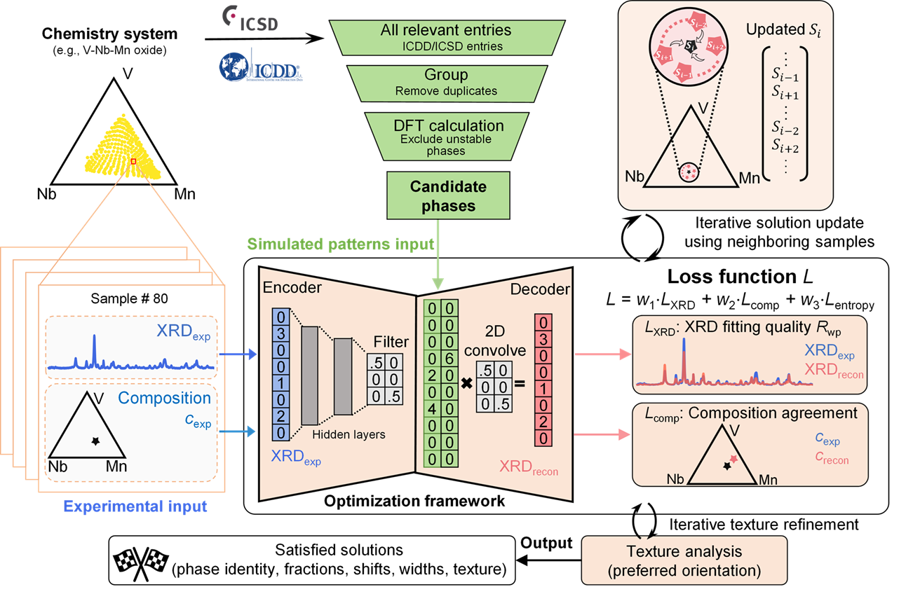

Oct 12, 2025
New Publication in npj Comput. Mater.

We are pleased to announce that our latest research paper has been accepted for publication in npj Comput. Mater.. Combinatorial synthesis and high-throughput characterization have become powerful tools to accelerate the discovery and design of novel materials. Correctly extracting information about the constituent phases and gaining materials insight from high-throughput X-ray diffraction data of combinatorial libraries is a crucial step in establishing the composition–structure–property relationship. Basic information includes the number, identity, and fraction of present phases in all the samples, while advanced information includes the lattice change, texture information, solid solution behavior, etc. Encoding domain-specific knowledge, such as crystallography, X-ray diffraction, thermodynamics, kinetics, and solid-state chemistry, into automated algorithms is crucial for the development of automated phase mapping algorithms. In this study, we present an unsupervised optimization-based solver to tackle the phase mapping challenge in high-throughput X-ray diffraction datasets. Besides leveraging robust fitting abilities of neural-network optimization algorithms, we integrated various material information, including first-principles calculated thermodynamic data, crystallography, X-ray diffraction, and texture into our automated solver. Our approach exhibits robust performance across multiple experimental datasets. We emphasize the importance of correctly integrating material information for automated solvers, contributing to the development of future automated characterization tools.
Title: Automated Phase Mapping of High Throughput X-ray Diffraction Data Encoded with Domain-Specific Materials Science Knowledge
Journal: npj Comput. Mater. (accepted)